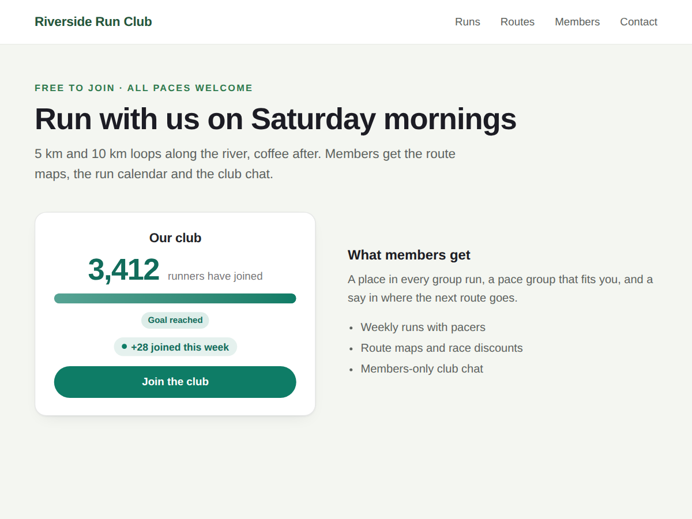

Headcount
Live member counter that shows how many joined
- Live count of your site's members
- "+28 joined this week" line, updated by itself
- Goal bar with automatic next goal
- First names of new members (Premium)

What it does
Headcount shows how many members your site has, as a live number on any page: "3,412 members have joined". People join a club or a community more readily when they see others already did.
The count comes from your site's member list, so you never type it in. A small line under it says how many joined in the last 7 days, such as "+28 joined this week". Pending and blocked members are not counted.
The counter can be a big number on its own or a number with a goal bar. Without a goal of your own, it uses the next round number (100, 250, 500 and so on). Write your own text, add a button to your sign-up page, and match colours and font to your site. Before the first member joins, visitors see a short line such as "Be one of our first members" instead of a zero.
The free plan shows the live member count, as a big number or goal bar, with the weekly line. Premium names up to three new members by first name, taken only from members whose profile is public, never e-mails, last names or photos. It also counts new members per month, adds members you had before the site, hides the number until it reaches an amount you choose, sets a new goal when you reach yours, and adds a circle style.
Price
Free
- Live count of your members
- Big number or goal bar style
- "+N joined this week" line
- Your text, colours, font and button
Premium
$4/month, 20% off yearly ($3.20/month billed yearly)
- First names of new members
- "+N joined this month"
- Add members from before your site
- Circle style, "show from", new goal